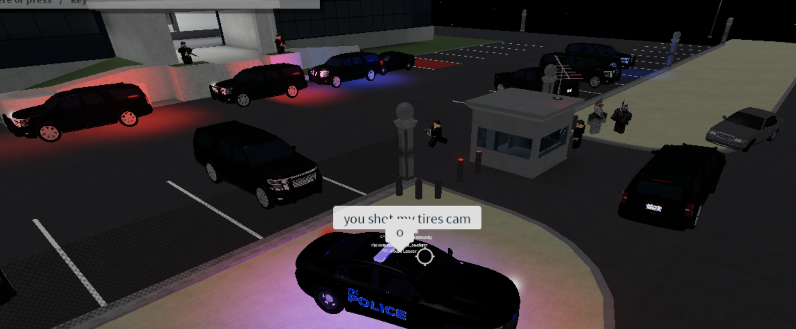

Summary
For the past three years, I’ve created a rendition of Washington, D.C., allowing players to roleplay in the virtual city. While it started as a simple cops and robbers game, it has evolved to a full-fledged community — almost every aspect of real-life United States government is integrated into our community, allowing players to take part in elections, run for political positions, join bureaucratic agencies, and much more. Players can fulfill their job’s duties in-game while also socializing with others. We even have our own fictious US Code (74 pages in length!) and constitution! The game allows users to do things as complex as driving cars and combatting other players to drinking coffee at a cafe.
Features & Development
Our game, comprised of about 20,000 lines of code, is delivered in LUA usinng the ROBLOX Developer Studio. As my game grew to unprecedented numbers, I have expanded the development team of one to eleven. I coordinate, compromise, manage the implementation of new features, marketing & user outreach, graphic design, game security, and bug fixing on a daily basis. I also solicit input from our own players and constantly think about user retention and developing meaningful and intuitive features/products tiered to our users.

Beyond empowering my technical skill set, developing and running a virtual game has given me tremendous practical experience with cybersecurity. Malicious players have, and always will, try to generate cars, money, property, etc. In combatting this, our code follows strict industry standards for game development to ensure the integrity of our game and the safety of our players. We do this using the client-server model, primarily through server-side validation as well as exploit checking on the client.
Aside from code, we bring our game to life using graphic design for interfaces, 3D modeling for meshes, and animations. Click here to see some examples!
Personal Takeaways
Through developing and expanding this project, I have become passionate about video game development. It has taught me that technology, although fittingly, is heavily technical, there are still very intricate considerations I must make about people. While my theoretical Computer Science courses have taught me so much, I’ve realized that through game development, I’m able to apply these skills on impactful projects that have real consequences on people other than the confines of my computer’s compiler.
Many of my players spend hours in-game, and even more hours out of the game discoursing with other community members. They have developed profound friendships, and I have been personally thanked by users suffering from loneliness or social anxiety for giving them an anonymous outlet and platform. Moreover, I have come to learn that my game has had positive effects on my players — increased knowledge of civics, government, English grammar, and much more. My game’s community, with thousands of active members every day, shatters the “useless” or “violent” video games stereotype, and instead is a real example of how technology can be used to help others.